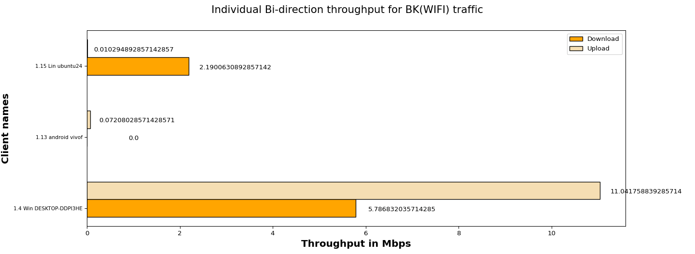
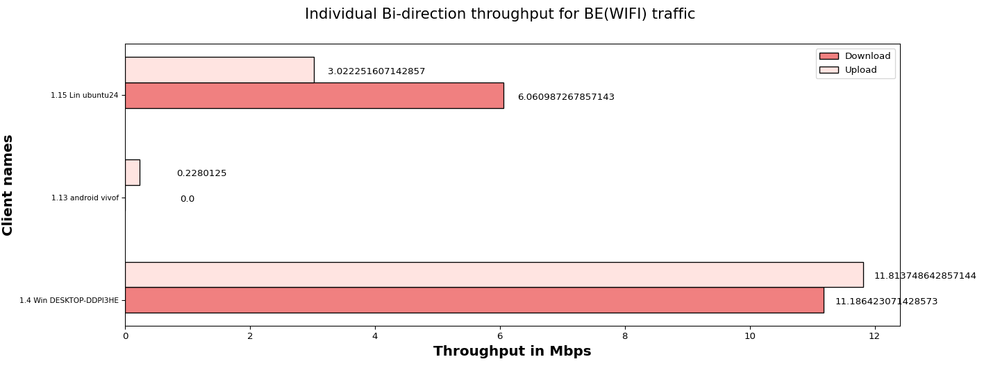
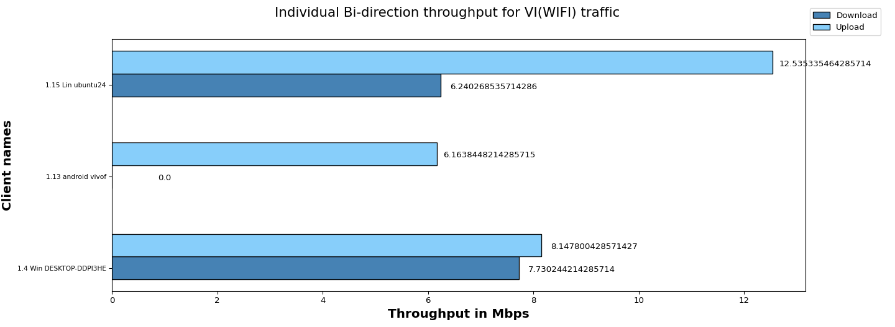
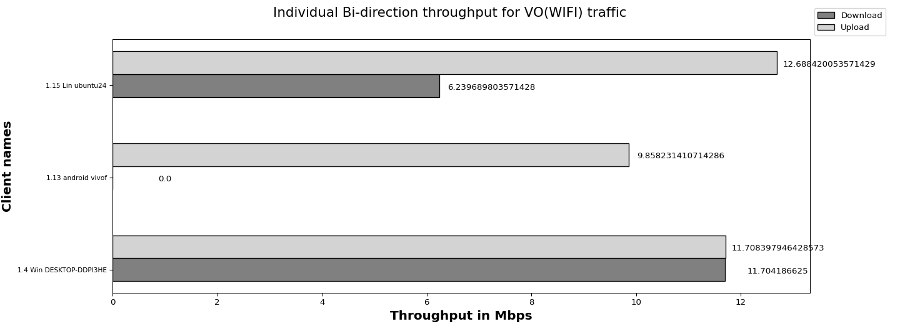

The objective of the QoS (Quality of Service) traffic throughput test is to measure the maximum achievable throughput of a network under specific QoS settings and conditions.By conducting this test, we aim to assess the capacity of network to handle high volumes of traffic while maintaining acceptable performance levels,ensuring that the network meets the required QoS standards and can adequately support the expected user demands.
| Test Configuration |
|
||||||||||||||||||||||||||||||||||||||||
| No of Stations | Throughput for Load 100.0 Mbps-upload | Throughput for Load 100.0 Mbps-download |
|---|---|---|
| 3 | BK : 11.12, BE : 15.06, VI: 26.85, VO: 34.26 | BK : 7.98, BE : 17.25, VI: 13.97, VO: 17.94 |
The below graph represents overall Bi-direction throughput for all connected stations running BK, BE, VO, VI traffic with different intended loadsUpload:100.0 Mbps,Download:100.0 Mbps per tos

The below graph represents individual throughput for 3 clients running BK (WiFi) traffic. X- axis shows “Throughput in Mbps” and Y-axis shows “number of clients”.

| Client Name | MAC | SSID | Type of traffic | Offered upload rate | Offered download rate | Observed average upload rate | Observed average download rate | Observed Upload Drop (%) | Observed Download Drop (%) | Expected Bi-direction rate(Mbps) | Status |
|---|---|---|---|---|---|---|---|---|---|---|---|
| 1.4 Win DESKTOP-DDPI3HE | e4:a4:71:93:70:e7 | NETGEAR_5G_wpa2 | Background | 100.0 Mbps | 100.0 Mbps | 11.041758839285714 Mbps | 5.786832035714285 Mbps | 0.000000 | 61.006113 | 30 | FAIL |
| 1.13 android vivof | 6:97:12:01:52:0 | NETGEAR_2G_Open | Background | 100.0 Mbps | 100.0 Mbps | 0.07208028571428571 Mbps | 0.0 Mbps | 0.440529 | 62.498544 | 30 | FAIL |
| 1.15 Lin ubuntu24 | c:5f:67:69:3c:86 | NETGEAR_2G_wpa2 | Background | 100.0 Mbps | 100.0 Mbps | 0.010294892857142857 Mbps | 2.1900630892857142 Mbps | 80.827664 | 73.983008 | 30 | FAIL |
The below graph represents individual throughput for 3 clients running BE (WiFi) traffic. X- axis shows “number of clients” and Y-axis shows “Throughput in Mbps”.

| Client Name | MAC | SSID | Type of traffic | Offered upload rate | Offered download rate | Observed average upload rate | Observed average download rate | Observed Upload Drop (%) | Observed Download Drop (%) | Expected Bi-direction rate(Mbps) | Status |
|---|---|---|---|---|---|---|---|---|---|---|---|
| 1.4 Win DESKTOP-DDPI3HE | e4:a4:71:93:70:e7 | NETGEAR_5G_wpa2 | Besteffort | 100.0 Mbps | 100.0 Mbps | 11.813748642857144 Mbps | 11.186423071428573 Mbps | 0.000000 | 50.771644 | 30 | FAIL |
| 1.13 android vivof | 6:97:12:01:52:0 | NETGEAR_2G_Open | Besteffort | 100.0 Mbps | 100.0 Mbps | 0.2280125 Mbps | 0.0 Mbps | 0.000000 | 71.428571 | 30 | FAIL |
| 1.15 Lin ubuntu24 | c:5f:67:69:3c:86 | NETGEAR_2G_wpa2 | Besteffort | 100.0 Mbps | 100.0 Mbps | 3.022251607142857 Mbps | 6.060987267857143 Mbps | 55.740892 | 72.973563 | 30 | FAIL |
The below graph represents individual throughput for 3 clients running VI (WiFi) traffic. X- axis shows “number of clients” and Y-axis shows “Throughput in Mbps”.

| Client Name | MAC | SSID | Type of traffic | Offered upload rate | Offered download rate | Observed average upload rate | Observed average download rate | Observed Upload Drop (%) | Observed Download Drop (%) | Expected Bi-direction rate(Mbps) | Status |
|---|---|---|---|---|---|---|---|---|---|---|---|
| 1.4 Win DESKTOP-DDPI3HE | e4:a4:71:93:70:e7 | NETGEAR_5G_wpa2 | Video | 100.0 Mbps | 100.0 Mbps | 8.147800428571427 Mbps | 7.730244214285714 Mbps | 0.000000 | 35.970832 | 30 | FAIL |
| 1.13 android vivof | 6:97:12:01:52:0 | NETGEAR_2G_Open | Video | 100.0 Mbps | 100.0 Mbps | 6.1638448214285715 Mbps | 0.0 Mbps | 0.000000 | 37.416352 | 30 | FAIL |
| 1.15 Lin ubuntu24 | c:5f:67:69:3c:86 | NETGEAR_2G_wpa2 | Video | 100.0 Mbps | 100.0 Mbps | 12.535335464285714 Mbps | 6.240268535714286 Mbps | 56.397453 | 62.470749 | 30 | FAIL |
The below graph represents individual throughput for 3 clients running VO (WiFi) traffic. X- axis shows “number of clients” and Y-axis shows “Throughput in Mbps”.

| Client Name | MAC | SSID | Type of traffic | Offered upload rate | Offered download rate | Observed average upload rate | Observed average download rate | Observed Upload Drop (%) | Observed Download Drop (%) | Expected Bi-direction rate(Mbps) | Status |
|---|---|---|---|---|---|---|---|---|---|---|---|
| 1.4 Win DESKTOP-DDPI3HE | e4:a4:71:93:70:e7 | NETGEAR_5G_wpa2 | Voice | 100.0 Mbps | 100.0 Mbps | 11.708397946428573 Mbps | 11.704186625 Mbps | 0.000184 | 48.107677 | 30 | FAIL |
| 1.13 android vivof | 6:97:12:01:52:0 | NETGEAR_2G_Open | Voice | 100.0 Mbps | 100.0 Mbps | 9.858231410714286 Mbps | 0.0 Mbps | 0.000000 | 80.319591 | 30 | FAIL |
| 1.15 Lin ubuntu24 | c:5f:67:69:3c:86 | NETGEAR_2G_wpa2 | Voice | 100.0 Mbps | 100.0 Mbps | 12.688420053571429 Mbps | 6.239689803571428 Mbps | 68.259763 | 62.933576 | 30 | FAIL |
| Information |
|
||||